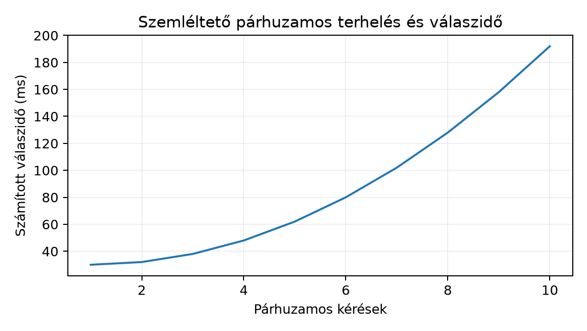

Átvételi követelmény: a bemutatóban a hibás bemenetet, a hiányzó címkét és a jogosulatlan hozzáférési próbát is demonstrálni kell. A sikeres normál futás nem bizonyítja a helyreállíthatóságot és a biztonságot.
A korábbi ellenőrző pontokon egy szivárgásmentes modellt építettünk (VI. ellenőrző pont: szivárgásmentes modellkísérlet), csomagként átadhatóvá tettük (VIII. ellenőrző pont: átadható modellprojekt), és release-feltételekkel kiadtuk (Kiadás, visszaállítás és terhelési próba). Most a kérdés az, hogy a futó rendszerről milyen bizonyítékokat gyűjtünk, és mit teszünk, ha a bizonyíték hibát mutat. A IX. ellenőrző pont ezért nem egy szűk programozási feladat, hanem egy mérési és hibakezelési terv, amelyet a Northstar késői kézbesítés modelljén futtatunk végig.
A konkrét helyzet: a northstar-late modell minden
rendeléskor becsüli, hogy a kézbesítés 7 napnál később lesz-e.
Reggelenként batch módban 5000 rendelési rekordot pontozunk, napközben
pedig egy kis FastAPI-végpont válaszol egyedi kérésekre. A bemenet
rendelésenként az Adatéletciklus és a predikció
pillanata alfejezetben rögzített, a rendelés pillanatában ismert
feature-vektor; a megfigyelési egység egy
order_id/request_id; a kimenet
pred_prob, pred_label,
model_version és request_id. Az igazi
target_late csak a kézbesítés után, tehát késleltetve
érkezik meg. A rendszer LOCalhoston, CPU-n fut, nincs felhő, fizetős API
vagy titkos ügyféladat.
Az elvárt ellenőrzés: a p95 válaszidő legfeljebb 250 ms; a batch futás 5000 soron legfeljebb 60 másodperc; 30 napos referenciaablakhoz képest a folytonos feature-ök PSI driftje 0,1 alatt marad; a 7 napnál régebbi kérések legalább 95%-ában rendelkezésre áll a címke; a rollback 5 percen belül visszaáll egy ismert verzióra; a szolgáltatás csak a szükséges jogosultságokkal fér a titkokhoz és a modellhez.
Induló becslés a megoldás előtt: egy naplóban 20 kérés késleltetése érkezett, rendezve: 8, 9, 10, 11, 12, 12, 13, 14, 15, 15, 16, 17, 18, 20, 21, 22, 25, 31, 48, 510 ms. Körülbelül mekkora a p95? Mielőtt tovább olvasol, válaszolj egy számmal, és indokold, miért veszélyes ebből a 20 mintából a valódi farokról dönteni.
A compute budget (számítási keret) egy megállapodás arról, hogy egy futtatási egység mennyi CPU-időt, memóriát, késleltetést és tárhelyet használhat. A cél nem az, hogy mindig alacsony legyen a terhelés, hanem hogy előre ismert korlátunk és mérésünk legyen. Az API esetén a kulcsmutató a válaszidő-eloszlás p95 kvantilisa. Ha mért késleltetés van, rendezzük őket növekvő sorrendbe: . Az alsó 95%-os tapasztalati kvantilis az a , ahol a legkisebb egész, amelyre . A mértékegység ms, a shape egy hosszú vektor.
A 20 elemű példában , tehát , és a p95 a 19. rendezett érték, azaz 48 ms. Ez megfelel annak, hogy a mérések 95%-a legfeljebb 48 ms, és 5%-uk, azaz egyetlen kérés, lassú. A legnagyobb érték, 510 ms, a farokban van, ezért a p95 robusztusabb, mint a maximum, de még így is erősen függ a minta elemszámától.
A batch munkánál a keret a teljes futási időre és memóriára vonatkozik. A p95-öt becsülhetjük a fejlesztőgépen ismételt méréssel, azonban teljesítményállításhoz hardver, inputméret, verzió és ismétlésszám is kell. Az alábbi chart egy számított függvénypélda arra, hogyan nőhet a válaszidő a párhuzamos terheléssel:

A görbe csak a tervezési logikát mutatja: amíg a párhuzamos terhelés a CPU korlát alatt van, a válaszidő közel állandó; utána a sorban állás miatt meredeken nő. A tényleges méréshez a Kiadás, visszaállítás és terhelési próba alfejezetben tanult load budget tesztet kell futtatni.
A batch és API nem ugyanaz a modell kétféle meghívása, hanem két
külön szerződés. A batch inputja egy előre összegyűjtött fájl vagy
tábla; a futás azonosítóval rendelkezik, az output idempotens, tehát
ugyanaz a futás ugyanazt az eredményfájlt állítja elő. Az API inputja
egyetlen kérés; a válasznak gyorsnak kell lennie, és a szerződés a
/health, /ready, séma és verzió mezőket is
tartalmazza.
A döntési lap három kérdésből áll: milyen késleltetést bír el a folyamat, mekkora a tranzakciós egység, és mi történjen, ha a futás félbeszakad? A rendeléskor hozott döntéshez API kell, mert a választ azonnal felhasználjuk. A napi riport vagy modellminőségi utóellenőrzés viszont batch, mert a teljes forgalmat egyben, lassabban is feldolgozhatjuk, és a függőséget jobban rögzítjük.
A drift (adateltolódás, data drift) azt jelenti, hogy a szolgáltatás inputjának eloszlása eltér a modellépítéskori vagy a referenciaablak szerinti eloszlástól. A Population Stability Index (PSI) a folytonos feature-öt diszkrét bucketekre osztja, és a referencia- meg az aktuális gyakoriságok eltérését méri:
ahol a bucketek száma, a referenciaablakban az . bucketbe eső rendelések aránya, pedig a friss ablakban mért arány. Az és egyaránt hosszú vektor, minden elemük 0 és 1 közötti arány, mértékegység nélkül, és . A PSI értéke 0-tól felfelé terjed; 0 akkor, ha a két eloszlás azonos, nagyobb érték erősebb eltérést mutat. Ha valamelyik bucket üres, a tagot kihagyjuk vagy kis epszilont használunk.
Kézi kontroll két bucketre: legyen , . Ekkor
A 0,1 alatti PSI-t gyakran stabilnak, a 0,1 és 0,25 közöttit
figyelmeztetésnek, a 0,25 felettit erős eltérésnek tekintik, de ez
heurisztika, nem statisztikai garancia. A PSI nem mondja meg, hogy a
drift rontja-e a modellt; először a predikció és a későbbi címke közötti
teljesítményt kell nézni. Folytonos feature-ökre a
scipy.stats.ks_2samp is adhat p-értéket, de a p-érték itt
is a nullmodell szerinti szélsőséget méri, nem a drift
valószínűségét.
A delayed label (késleltetett címke) azt jelenti, hogy a predikció
pillanatában még nem ismerjük a valódi eredményt. A Northstar adatban a
label_available_at az actual_delivery_at
értékével egyezik, tehát a címke csak a teljes kézbesítés után áll
rendelkezésre. Ha egy rendelés
időben érkezik, és a kézbesítésig eltelt idő
,
akkor a
időpontban a címke pontosan akkor ismert, ha
.
A
eloszlásfüggvénye
;
ezzel a
-ben
megfigyelhető, legalább
napos rendelések arányának várható értéke
.
Az
értéke 0 és 1 közötti valószínűség,
mértékegysége nap, az input shape pedig a rendelésekhez tartozó
label-availability vektor.
A legfontosabb statisztikai veszély a korai mérés szelektív torzítása. A 7 napos cél esetén a pozitív esetek egy része eleve csak 8. vagy későbbi napon derül ki. Ha a 2. napon számolunk modellminőséget, akkor a gyorsan kézbesített, túlnyomórészt negatív esetekre látunk címkét, a lassú pozitív esetekre nem. Az így kapott AUC vagy accuracy optimista. Ez ugyanaz a leakage-logika, mint a VI. ellenőrző pont: szivárgásmentes modellkísérlet alfejezetben: a mérés pillanatában még nem megérkezett címkét nem vonhatjuk be az értékelésbe, és a hiányzó címkét nem tölthetjük fel hallgatólagosan nullával.
A rollback (visszaállítás) nem a hiba bekövetkezésekor kitalált
improvizáció, hanem release-kori döntési szabály. Rögzítjük, hogy mely
feltételek váltják ki, melyik verzióra állunk vissza, és hogyan
ellenőrizzük a visszaállítás eredményét. A feltételek lehetnek: p95
késleltetés tartósan a budget fölött, a batch output sémája nem egyezik
a manifesttel, a PSI-riasztást nem tudjuk üzleti eseménnyel magyarázni,
vagy a címkék késése miatt a modellminőségi ablakban a hiba elszabadul.
Maga a visszaállítás pointer-váltás: a live pointer egy
korábbi, hash-elt modellverzióra mutat.
A Hozzáférés, titkok és adatminimalizálás alfejezetben tanított elvek itt futási feltétellé válnak. A szolgáltatásnak csak a modell olvasására, a metrikák írására és a saját naplójára van joga; nyers rendelési adathoz vagy a tanító adathoz nem fér. A titkok környezeti változóban élnek, nem a kódban; a napló redaction-szabálya kitakarja a tokeneket, kulcsokat és személyes azonosítókat; a retention pedig meghatározza, hogy a nyers kérések meddig őrizhetők. A provider boundary azt is rögzíti, hogy ha egy külső szolgáltatás kap adatot, az átadott mezők listája és a törlési folyamat előre dokumentált.
A példa nem valódi futási jegyzőkönyv, hanem szemléltető, helyi CPU-n
futtatható terv. A munkakönyvtár legyen northstar-monitor/.
Először szimulált szolgáltatásnaplót készítünk, hogy a későbbi SQL- és
Python-mutatók determinisztikusak legyenek:
# generate_service_log.py
from pathlib import Path
import csv
import random
from datetime import datetime, timedelta, timezone
random.seed(20261020)
out = Path("data/service_log.csv")
out.parent.mkdir(exist_ok=True)
start = datetime(2025, 6, 1, tzinfo=timezone.utc)
rows = []
for i in range(5000):
order_at = start + timedelta(minutes=30 * i)
distance_km = random.gamma(2.0, 40.0)
priority_flag = 1 if random.random() < 0.2 else 0
basket_minor = random.randint(500, 25000)
latency_ms = int(random.lognormvariate(3.2, 0.6))
model_version = "northstar-late-0.3.0"
pred_prob = round(min(0.9, max(0.02, 0.05 + 0.003 * distance_km + 0.15 * priority_flag)), 4)
request_id = f"req-{i:05d}"
rows.append([request_id, order_at.isoformat(), distance_km, priority_flag,
basket_minor, latency_ms, model_version, pred_prob])
with out.open("w", newline="") as f:
writer = csv.writer(f)
writer.writerow(["request_id", "order_at", "distance_km", "priority_flag",
"basket_minor", "latency_ms", "model_version", "pred_prob"])
writer.writerows(rows)
print("wrote", len(rows), "rows")A kód egyetlen seedből 5000 kérést készít. A predikciós valószínűség
determinisztikus függvénye a távolság és prioritás jellemzőknek, tehát
itt nincs valódi modellbetöltés, de a séma ugyanaz, mint a VIII. ellenőrző pont: átadható modellprojekt
alfejezetben átadott predikciós szerződés. A pred_prob a
0,02–0,90 intervallumba van vágva; a valódi modell kalibrált
valószínűsége is 0 és 1 közé esik.
A batch-kontroll és a p95 lekérdezése DuckDB SQL-ben:
-- batch latency control, DuckDB
SELECT
date_trunc('day', order_at::TIMESTAMP) AS day,
count(*) AS requests,
quantile_cont(latency_ms, 0.95) AS p95_latency_ms,
count(*) FILTER (WHERE latency_ms > 250) AS over_budget_requests
FROM 'data/service_log.csv'
GROUP BY 1
ORDER BY 1;Ez a lekérdezés napi bontásban adja a kérésszámot, a p95 késleltetést
és a költségvetés feletti kérések számát. A quantile_cont
DuckDB-függvény; SQLite-ban hasonló célra saját ablakos rendezést
kellene írni, ez egy dialektuskülönbség, amit a DuckDB: helyi analitikus SQL szerver nélkül
alfejezetben már láttunk. A p95-öt naponta számoljuk, mert a terhelés
napszakonként eltér.
A drift-ellenőrzés Pythonban a PSI-t számítja ki a
distance_km feature-re:
# monitor_drift.py
import csv
import math
from pathlib import Path
def psi(reference, current, bins=10):
lo = min(reference + current)
hi = max(reference + current)
width = (hi - lo) / bins
e = [0] * bins
a = [0] * bins
for v in reference:
i = min(bins - 1, int((v - lo) / width))
e[i] += 1
for v in current:
i = min(bins - 1, int((v - lo) / width))
a[i] += 1
e = [x / len(reference) for x in e]
a = [x / len(current) for x in a]
return sum((ai - ei) * math.log(ai / ei)
for ei, ai in zip(e, a) if ei > 0 and ai > 0)
with Path("data/service_log.csv").open() as f:
rows = list(csv.DictReader(f))
dist_all = [float(r["distance_km"]) for r in rows]
ref = [float(r["distance_km"]) for r in rows[:3000]]
cur = [float(r["distance_km"]) for r in rows[3000:]]
print(round(psi(ref, cur), 4))A függvény 10 egyenlő szélességű bucketre osztja a referencia- és az aktuális ablakot. Ha az utóbbi 2000 kérés távolsága eltolódik, a PSI nő; ha azonos eloszlású marad, a PSI nullához közeli. A kimenet itt egyetlen szám, ezért ki kell egészíteni a döntéssel: 0,1 alatt nincs riasztás, 0,1 fölött a séma- és üzleti naplót is meg kell nézni.
A rollback munkamenet akkor indul, ha a PSI-riasztás nem
magyarázható. A live pointer állomány:
# Windows PowerShell; munkakönyvtár: northstar-monitor
Get-FileHash models/northstar-late-0.3.0.bin -Algorithm SHA256
Get-Content models/pointer.json
# szemléltető pointer:
# {"live": "northstar-late-0.3.0", "sha256": "abc123...", "activated_at": "..."}
python -m deployment.rollback --from northstar-late-0.3.0 --to northstar-late-0.2.1 --reason "PSI alert"A rollback modul a pointert
northstar-late-0.2.1-re állítja, és a /ready
végpont addig sikertelen, amíg az új pointerrel nem fut le a séma- és
hash-ellenőrzés. Ez a Kiadás, visszaállítás és
terhelési próba alfejezetben bevezetett release-feltételek
futtatása.
Végül a hozzáférési ellenőrzés és naplóredaction:
# access_check.py
import logging
import os
class RedactingFilter(logging.Filter):
def filter(self, record):
msg = record.getMessage()
for name in ["API_KEY", "DB_PASSWORD", "SECRET"]:
if os.environ.get(name) and os.environ[name] in msg:
record.msg = msg.replace(os.environ[name], "[REDACTED]")
return True
logging.basicConfig(level=logging.INFO)
logging.getLogger().addFilter(RedactingFilter())
logging.info("request finished with token=%s", os.environ.get("API_KEY", "missing"))A szűrő azt ellenőrzi, hogy a naplóüzenetbe került-e egy környezeti titok. Ez nem védi meg a fejlesztőt attól, aki szándékosan logolja a titkot, de megfogja a formátumsztringből beszivárgó gyakori esetet. A titkokat soha nem írjuk notebook-outputba vagy futási naplóba; ahol külső szolgáltatásnak kell átadni, ott a mezők listája a provider boundary dokumentumban él.
A p95-ös batch-lekérdezés várhatóan olyan napi értékeket ad,
amelyekben a kérésszám 300–500 között mozog, a p95 pedig 200–350 ms
körül ingadozik a szimulált lognormális eloszlás miatt. A
over_budget_requests oszlop a napi kérések 5%-ánál nem
lehet több akkor, ha a p95 éppen a 250 ms-os határon van. A PSI kézi
kontrollja visszaadja a korábbi 0,0405-ös értéket, ha a referencia- és
aktuális gyakoriságokat explicit bucketekben adjuk meg. A rollback
invariánsa: a pointer.json-ban szereplő hash egyezik a
northstar-late-0.2.1.bin fájl sha256
értékével, és a /ready csak a sémaellenőrzés után tér
vissza 200-as állapottal. Az access-szűrő invariánsa: a log kimenetben a
titok értéke nem szerepel, csak a [REDACTED] szöveg. A
kódblokkok után tehát nem elég annyit mondani, hogy „rendben”; meg kell
nevezni, melyik mérték melyik feltételt igazolja, és mekkora tolerancia
engedhető meg.
A fenti értékek szemléltetőek, mert a kapcsolódó példaprojektben még nem ellenőrzött. Ha helyben lefuttatod, a pontos számokat a saját futási jegyzőkönyv rögzíti; a seed 20261020 garantálja a szimulált input azonosságát azonos Python-verzión és azonos könyvtárverzión.
Értelmezés. A drift-jelentés szerint a
distance_km PSI-értéke 0,18 a referencia- és a friss ablak
között. A referenciaablak 30 nap, 1200 kéréssel; a friss ablak 3 nap, 90
kéréssel. Fogalmazd meg, miért nem állíthatjuk automatikusan, hogy a
modell bemenete elromlott, és milyen további két ellenőrzést végeznél el
a riasztás lezárása előtt.
Implementálás. Írj SQL lekérdezést DuckDB-re,
amely a service_log és egy külön label_events
tábla alapján napi bontásban megadja: az adott napon érkezett kérések
számát, és közülük azok arányát, amelyeknek 14 napon belül megérkezett a
címkéje. A label_events sémája: request_id,
label_available_at, target_late. A címke csak
akkor számít megérkezettnek, ha label_available_at nem üres
és legfeljebb 14 nappal későbbi, mint a kérés ideje.
Hibakeresés. A batch futás 503-at ad, a
/health 200-at. A napló utolsó sora:
downloaded model with api_key=sk-1234abcd. Nevezd meg a két
hibát ebben a helyzetben, és add meg a javító lépéseket a hozzáférési és
naplózási szerződés szerint.
Megváltozott feltétel. A termékcsapat a batch pontozásról áttér valósidejű API-pontozásra. A becsült forgalom 500 kérés/óra, a rendelkezésre álló CPU 2 mag. Adj mérési tervet a compute budgethez: milyen inputméret, hány ismétlés, milyen metrikák és milyen rollback-feltétel kell ahhoz, hogy a 250 ms-os p95-célt ellenőrizni tudd?
A PSI 0,18 figyelmeztetés, de három nap alatt 90 kérés kis minta; a becsült PSI szórása nagy, és a bucketek véletlenszerűen is elmozdulhatnak. Először a kérések időbeli és szegmensbeli bontását nézném: ha egyetlen nagy ügyfél vagy kampány okozza, a drift magyarázható. Másodszor a modell teljesítményét ellenőrizném a már megérkezett címkéken: ha a PSI ellenére az AUC a toleranciasávon belül marad, akkor az inputeltolódás nem feltétlenül jelent minőségromlást. A riasztást le lehet zárni azzal, hogy a PSI-ra statisztikai bizonytalanságot is számolunk, például bootstrap intervallumot a referenciaablakból, és csak akkor emelünk incidenst, ha a friss PSI a bootstrap 95%-os sávja fölé esik.
Egy lehetséges SQL:
SELECT
date_trunc('day', s.order_at::TIMESTAMP) AS request_day,
count(*) AS requests,
avg(CASE
WHEN l.label_available_at IS NOT NULL
AND l.label_available_at::TIMESTAMP <= s.order_at::TIMESTAMP + INTERVAL '14 day'
THEN 1 ELSE 0 END) AS label_coverage_14d
FROM service_log s
LEFT JOIN label_events l USING (request_id)
GROUP BY 1
ORDER BY 1;A LEFT JOIN azért szükséges, hogy azok a kérések is
szerepeljenek a nevezőben, amelyekhez még nincs címke. A 14 napos
feltétel explicit cenzúra: a 15. napon érkező címke már nem javítja a 14
napos coverage-et. A napi bontás a megfigyelési egységet, a kérést
tartja meg; az AVG a bináris indikátor átlaga.
A 503 azt jelzi, hogy a batch futás nem tudta betölteni a modellt
vagy az inputot, miközben a /health csak a folyamat él,
tehát a service maga fut. A második hiba a naplóban lévő
sk-1234abcd API-kulcs: a titok értékét naplózzuk. Javítás:
a modell letöltése ne igényeljen API-kulcsot, hanem a lokalizált
artifact hash-ét ellenőrizze; ha mégis van külső hívás, a kulcs a
titokkezelőből jöjjön anélkül, hogy a log formátumsztringbe kerül, és a
RedactingFilter aktív legyen a kibocsátó loggeren. A 503
diagnózisához a batch futás stderrjét kell nézni, nem a
health-et.
A mérési terv: 500 kérés/óra, 10 perces forgalmi csúcsokat
szimulálunk 2 CPU-magos gépen; az input 5000 szintetikus rendelési
rekord, mindegyik a Feature-pipeline, baseline és
tanulás alfejezetben használt feature-sémával; 10 ismétlés,
mindegyikben más request_id, de azonos eloszlás. A mért
metrika: p50, p95, p99 válaszidő ms-ban, sikeres válaszok aránya,
processz memória maximuma. A /ready ellenőrzése ismétlésenként.
Rollback-feltétel: ha a p95 10 ismétlésből legalább 8 alkalommal 250 ms
felett van, vagy a sikertelen kérések aránya meghaladja az 1%-ot,
automatikusan a korábbi pointert kell aktíválni, és az eredményt a
futáskövetőben rögzíteni. Az értékekhez ugyanaz a hardver és verzió
kell, mint a termelésben; ha ez nem áll rendelkezésre, a mérés csak
előzetes, nem elfogadási bizonyíték.
A leggyakoribb tévedés, hogy egyetlen sikeres demóból tartós megbízhatóságra következtetünk. Ellenpélda: az API egy 1000 kéréses reggeli tesztben minden kérésre 200-as választ adott, a p95 190 ms volt; a csapat ezért engedélyezte a release-t. Másnap a batch folyamat a napi 5000 soros inputon memória-túllépést kapott, mert a teszt csak 1000 sort pontozott, és a teljes nap kibontott DataFrame-jét a folyamat egyszerre tartotta memóriában. A 200-as válaszok és az alacsony p95 igaz mérés volt, de nem bizonyította a batch memória-budgetjét. A rendszer bizonyítéka ezért több, független feltétel együttes teljesülése: p95 a terhelés mellett, batch memória és idő, séma-hash, a késleltetett címkék aránya, és a rollback lefutása. Ez nem különbözik a VIII. ellenőrző pont: átadható modellprojekt alfejezetben használt kontrollfelfogástól: egyetlen tesztfájl sem igazolja a teljes csomagot, és a VI. ellenőrző pont: szivárgásmentes modellkísérlet alfejezetben tanult leakage-védelem is akkor él, ha a mérési ablakot explicitté tesszük.
Önellenőrzés a rendszergazdai átadás előtt: van-e a release-hez PSI-referenciaablak és regisztrált küszöb? A delayed label mérés kizárja-e a még meg nem érkezett címkéket? A rollback-parancs hash-t és naplóbejegyzést is készít? A service account ténylegesen nem fér a nyers rendelési adatokhoz? Ha bármelyik kérdésre nemleges a válasz, a rendszer még nem hordozza azokat a bizonyítékokat, amelyeket a IX. ellenőrző pont kér.
A működő rendszer bizonyítéka nem a sikeres demó, hanem a mérési és hibakezelési terv: a compute budget p95-öt és memóriakorlátot ad; a batch és API szerződése különböző késleltetési és idempotencia-elvárásokat rögzít; a drift PSI-vel és statisztikai bizonytalansággal figyelhető; a delayed label mérés explicitté teszi a cenzúrát, hogy a kései pozitív esetek ne torzítsák a modellminőséget; a rollback pointer-váltással és előre írt feltételekkel fut; az access a legkisebb jogosultságot, környezeti titkokat és naplóredakciót tartatja be. A következő alkalmazásban a többnyelvű data science környezetbe lépünk, ahol ugyanezt a statisztikai fegyelmet R-eszközökkel is ismételhetően kell megvalósítani.